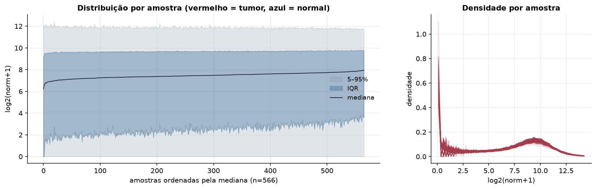
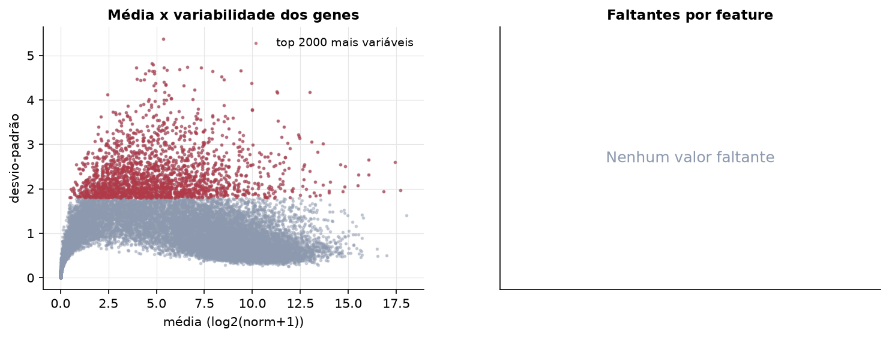
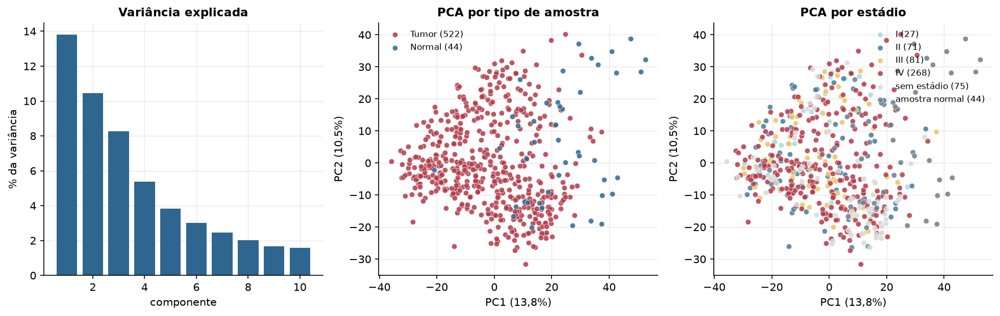
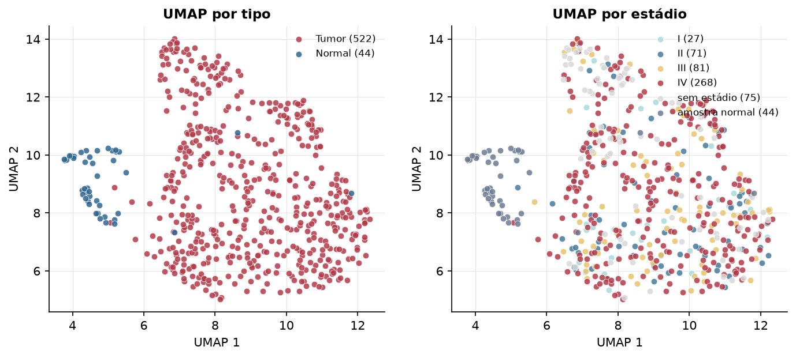
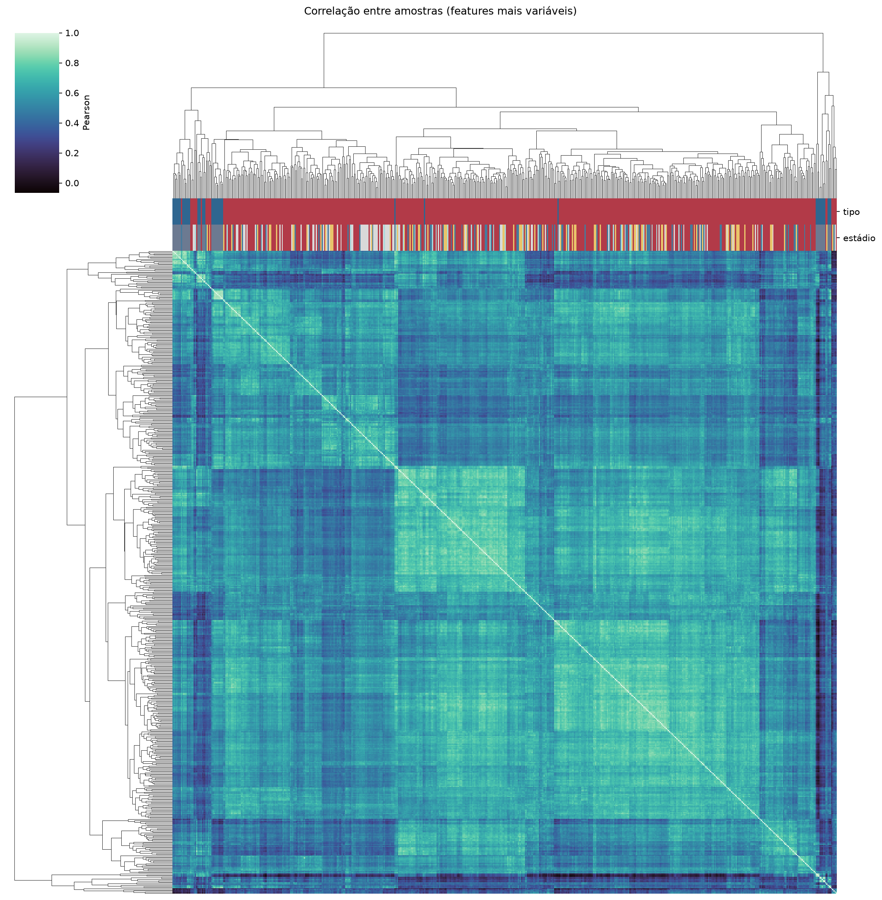
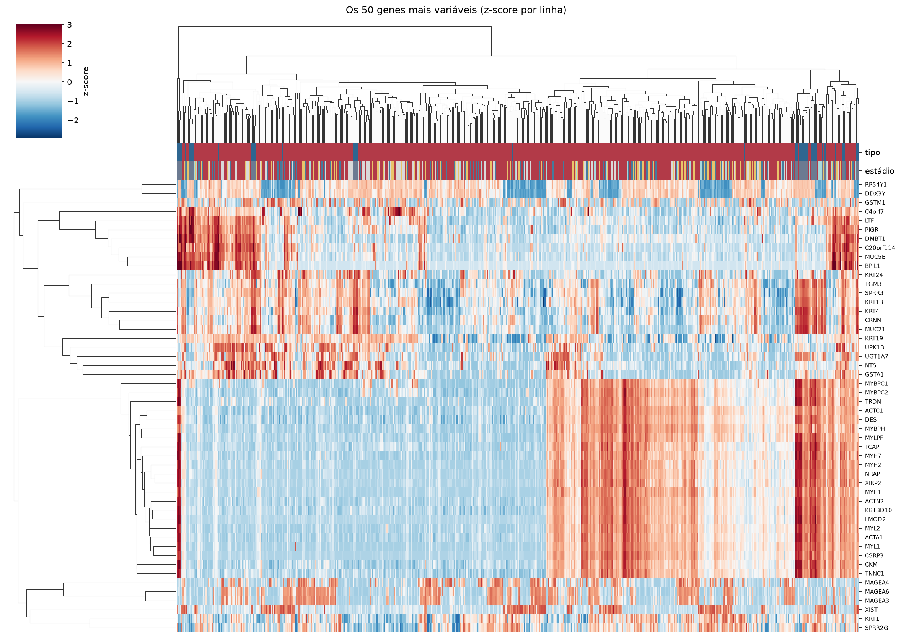
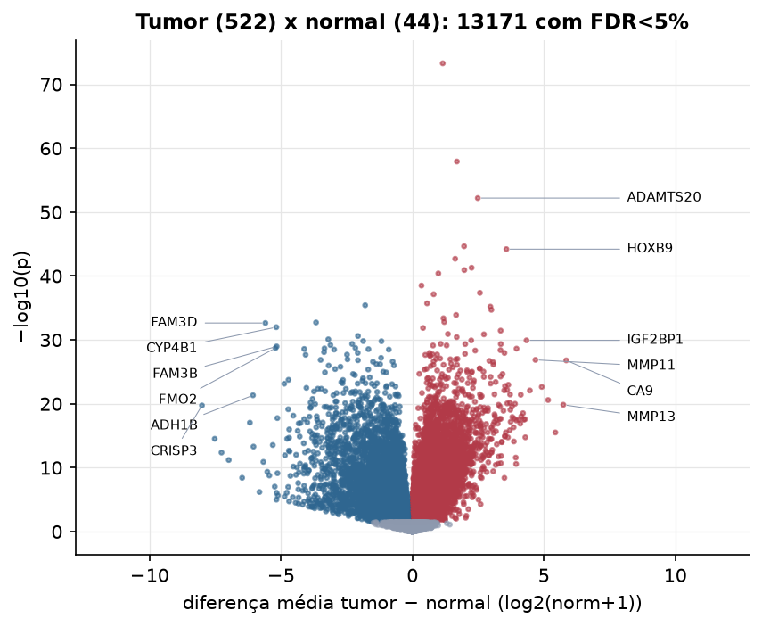
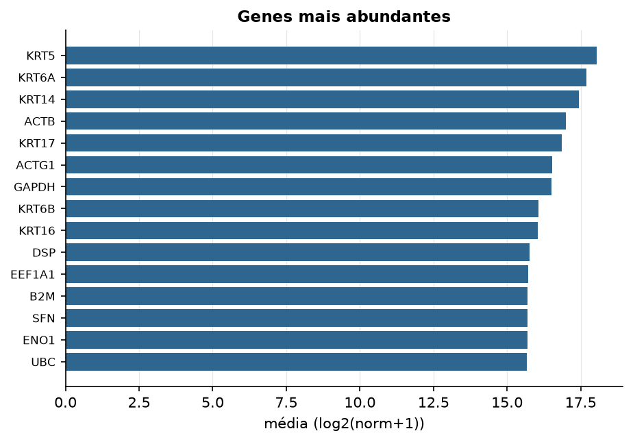

HNSC · RNA-seq (PanCanAtlas)
Illumina HiSeq, RSEM normalizado e corrigido por lote (EB++), log2(x+1) · gerado em 21/10/2026 21:41
20.531genes
522amostras tumorais
44amostras normais
0,0%valores faltantes
Fonte: PanCanAtlas EB++ via API do Xena
Estes valores já vêm normalizados e com correção de lote entre plataformas e centros. Servem bem para modelos gaussianos ou redes neurais; para um modelo de contagem use as contagens brutas do GDC.
Principais resultados
- 20.531 genes medidos em 566 amostras (522 tumorais e 44 normais); 0,0% dos valores estão faltando.
- Os dois primeiros componentes principais explicam 13,8% e 10,5% da variância das features mais variáveis.
- Correlação mediana entre amostras: 0,58.
- Amostras com correlação muito abaixo das demais (possíveis outliers técnicos): TCGA-CV-6933-11, TCGA-CV-6939-11, TCGA-CV-7091-11, TCGA-CV-7432-11, TCGA-HD-A634-01.
- Tumor x normal: 13171 genes diferentes com FDR < 5% (7002 maiores no tumor, 6169 maiores no normal; 43 pacientes têm o par tumor-normal).
- Mais aumentados no tumor: METTL11B, SUN3, ADAMTS20, ALPP, HOXB9, TLX2, HOXA13, CGB8.
- Mais reduzidos no tumor: FLJ11235, COBL, FAM3D, CYP4B1, CYP2J2, HLF, EPB41L4A, SSBP2.
- Associações clínicas com p < 0,05 nos componentes principais: PC1 com sexo (p=2.7e-05); PC3 com sexo (p=0.006); PC2 com sobrevida (p=0.015).
- Em mediana, 81,4% dos genes têm expressão acima de log2(norm+1)=1 em cada amostra.
Distribuição dos valores


Estrutura das amostras




Tumor x normal

Features mais diferentes entre tumor e normal
| diferenca_tumor_menos_normal | t | p | fdr | |
|---|---|---|---|---|
| METTL11B | 1.154 | 22.555 | 5.14e-74 | 1.04e-69 |
| SUN3 | 1.691 | 19.337 | 1.18e-58 | 1.2e-54 |
| ADAMTS20 | 2.488 | 20.066 | 6.37e-53 | 4.3e-49 |
| ALPP | 1.966 | 17.354 | 2.21e-45 | 1.12e-41 |
| HOXB9 | 3.574 | 21.685 | 6.25e-45 | 2.53e-41 |
| TLX2 | 1.627 | 16.715 | 2e-43 | 6.75e-40 |
| HOXA13 | 2.252 | 18.727 | 5.12e-42 | 1.48e-38 |
| CGB8 | 1.974 | 17.037 | 1.2e-41 | 3.03e-38 |
| OR2B6 | 0.988 | 15.868 | 3.98e-41 | 8.96e-38 |
| HOXD12 | 0.346 | 14.27 | 3.12e-39 | 6.32e-36 |
| LHX5 | 2.569 | 20.201 | 4.28e-38 | 7.89e-35 |
| NCBP2 | 0.808 | 20.596 | 7.2e-38 | 1.22e-34 |
| GUCA1C | 0.559 | 13.64 | 1.92e-36 | 2.99e-33 |
| FLJ11235 | -1.797 | -20.642 | 3.78e-36 | 5.47e-33 |
| PAEP | 2.965 | 18.137 | 6.33e-36 | 8.56e-33 |
| GAST | 3.002 | 18.902 | 1.97e-35 | 2.5e-32 |
| RFC4 | 1.662 | 21.812 | 1.26e-34 | 1.5e-31 |
| FAM71F1 | 1.181 | 13.743 | 4.14e-34 | 4.66e-31 |
| C20orf20 | 1.211 | 21.918 | 1.59e-33 | 1.7e-30 |
| COBL | -3.666 | -20.208 | 1.87e-33 | 1.89e-30 |
| FAM3D | -5.591 | -21.796 | 2.27e-33 | 2.19e-30 |
| CYP4B1 | -5.176 | -20.697 | 1.03e-32 | 9.47e-30 |
| IL28B | 0.404 | 12.692 | 1.35e-32 | 1.19e-29 |
| HOXA11 | 3.357 | 20.118 | 3.54e-32 | 2.99e-29 |
| MIOX | 1.35 | 13.423 | 1.21e-31 | 9.77e-29 |
| PPEF1 | 2.72 | 20.038 | 1.36e-31 | 1.06e-28 |
| CYP2J2 | -2.07 | -18.439 | 2.48e-31 | 1.86e-28 |
| TLX3 | 1.684 | 12.482 | 3.66e-31 | 2.65e-28 |
| HLF | -3.199 | -18.218 | 8.19e-31 | 5.72e-28 |
| IGF2BP1 | 4.341 | 17.586 | 1.18e-30 | 7.85e-28 |
Associação com variáveis clínicas
p-valores da associação dos três primeiros componentes principais (só tumores) com estádio (Kruskal-Wallis), sexo (Mann-Whitney), idade (Spearman) e sobrevida global (Cox univariado).
| estádio (Kruskal) | sexo (Mann-Whitney) | idade (Spearman) | sobrevida OS (Cox) | |
|---|---|---|---|---|
| PC1 (13,1%) | 0.236 | 2.73e-05 | 0.767 | 0.274 |
| PC2 (10,9%) | 0.072 | 0.062 | 0.651 | 0.015 |
| PC3 (7,3%) | 0.15 | 0.006 | 0.777 | 0.077 |
Mais abundantes
